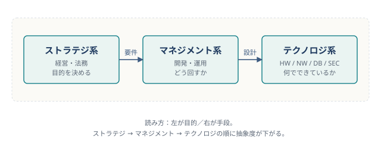

:::chapter-opener
:::chapter-lead
「何のために作るか」を決める分野。
経営戦略・会計・法務は、すべて経営者の意思決定という軸で貫かれています。
:::
:::
:::onepage-map

:::section-intro IT パスポート試験のストラテジ系は、出題数がもっとも多い分野です。 ただし、経営・財務・法律と範囲が広い一方で、中心にある問いはたった一つ。 「経営者は何を見て、何を決めるのか？」 これだけです。 :::
:::misconceptions
ストラテジ系には、3 文字や 4 文字の略語が次々と出てきます。 1 つずつ丸暗記していると、本試験で選択肢を見た瞬間に思考が止まります。
解決策はシンプルです。フレームワークを「何を見るための道具か」で引き出しに仕分けます。
:::compare-table | 道具 | 観点 | 一言で | | :-- | :-- | :-- | | SWOT | 自社 | 強み／弱み × 機会／脅威 | | VRIO | 自社 | その強みは「本当に」競争優位か | | 3C | 市場 | 顧客・競合・自社の三角測量 | | 5 フォース | 業界 | 業界の圧力を 5 方向から見る | | 4P / 4C | マーケ | 売り手 4 視点／買い手 4 視点 | | PPM | 事業 | 成長率 × 占有率で投資配分を決める | | アンゾフ | 成長 | 既存／新規 × 市場／製品 | :::
:::point-box ### 3 秒仕分けの合図 「自社を見るのか／市場を見るのか／投資を決めるのか」—— 選択肢を読んだらまずこの 3 択で仕分けます。 引き出しが決まれば、残る候補はたいてい 2 つか 3 つです。 :::
PPM は、市場成長率（縦軸）と市場占有率（横軸）で事業を 4 象限に分類する道具です。 4 象限にはそれぞれ「あだ名」があります。
:::caution-box ### 「問題児」と「負け犬」は似ているようで違う どちらも占有率は低いですが、市場そのものが育っているかで意味が真逆になります。 問題児は「投資次第で花形になりうる」候補、 負け犬は「市場自体が縮んでいる」候補です。 :::
DX やリーンスタートアップのような「新しめの用語」は、 目的 → 文脈 → 手法 の 3 階層で位置づけると混乱しません。
:::compare-table | 階層 | 用語 | 意味 | | :-- | :-- | :-- | | 目的（広い） | イノベーション | 新しい価値や仕組みを生むこと | | 文脈（中間） | DX | IT でビジネスモデルや組織を変えること | | 手法（具体） | リーンスタートアップ | 最小限の製品 (MVP) で仮説検証を繰り返す | :::
:::exam-trap-box ### 「DX とは何か」という問題では、手段の話にすり替えた選択肢が混ざる DX は経営の変革を指す用語です。 「電子看板（デジタルサイネージ）」や「情報格差（デジタルディバイド）」のような デジタル◯◯の仲間がよく並びますが、DX だけは「何が変わったか」を問うものです。 "技術の導入そのもの" を指す選択肢があれば、それは引っかけです。 :::
初学者がとくに混乱するのが、売上と利益の関係です。 売上は入ってきたお金、利益はそこから費用を引いた「残り」。 しかも利益には段階があり、損益計算書（PL）はそれらを上から下へふるい落としていく構造になっています。
:::point-box ### 損益計算書は「ふるい」
ストラテジ系は、ひっかけ問題の宝庫です。 似た用語は、暗記ではなく「何を、何のために、どう守る法律か」の 3 点で並べると整理できます。
:::compare-table | 権利 | 保護対象 | 代表例 | | :-- | :-- | :-- | | 著作権 | 表現されたもの | 文章・音楽・コード | | 特許権 | 高度な発明 | 新しい技術的アイデア | | 実用新案権 | 小さな考案 | 日用品の工夫 | | 意匠権 | 工業製品のデザイン | 形状・模様 | | 商標権 | 識別標識 | ロゴ・商品名 | :::
:::exam-trap-box ### 「アイデアそのもの」は著作権では守られない 著作権は「表現」を守る法律です。 アイデア、事実の列挙、ありふれた情報（時刻表など）は保護対象に含まれません。 アイデアを守るのは特許、デザインは意匠、識別標識は商標—— 何を守るかで法律が分かれる、と押さえてください。 :::
:::mini-quiz Q1. 仮説に基づき、実用に向けた最小限のサービスや製品を作って短期に顧客価値の検証を繰り返す手法はどれか。
::::answer 正解 : 4 「最小限の製品（MVP）→ 検証 → 改善」のサイクルはリーンスタートアップ。 DX は「経営の変革」を指す用語で、手法そのものではありません。 :::: :::
:::mini-quiz Q2. 著作権法で保護される対象として、最も適切なものはどれか。
::::answer 正解 : 3 著作権は「表現」を守ります。 アイデアは対象外、発明は特許法、形状は意匠法が扱います。 :::: :::
:::summary-card chapter ### この章のまとめ